Omuta
Omuta · Fukuoka
Omuta
Highlighted on the Fukuoka map.

Sights
Kosen Dago (Omuta)
Yachi Yan Do Omuta Zoo

Miikeko (Hikari no Koro)

Shi Uma Tenmangu Shrine (Miyahara Tenmangu Shrine)

Omuta Tennen Onsen Saiko Baths

Miike Tanko Mikawa Ko Ato
Shi Uma Tenmangu Shrine Uso Kae Festival
MPLC Sekitan Kan
Roadside Station Omuta Hana Purasu Kan
Kumano Shrine (Omuta)
Kindaika Sangyo Isan (Sekai Isan (Meiji Nippon no Sangyokakumei Isan))
Miikeko
Somoku Manju (Eguchi Sakae Shoten Main Shop)
Fuko Tera no Garyu Ume
Mitsui Minato Kurabu
THE TRAILERHOUSE VILLAGE Omuta SPA
Omuta Ritsu Miike Karuta History Museum (Karutakkusu Omuta)
Romendensha 204 Go Kafe (hara harmony coffee)
Omuta Tomodachiya Ehon Art Museum (Omuta Zoo Nai)
Miike Tanko Miyahara Ko
Minna no Tsuitachi Shiikuin Experience
Amagi Yama
Shiro Kokko
Omuta Yofu Katsu Domburi
Miike Tanko Senyo Tetsudo Shiki Ato
Suwa Park
Hagi no O Burial Mound
Kurosaki Park
Yugengaisha no Ri An Kataoka
Ariakekai no Yuhi
Ajisai Festival
Omuta Kanko Plaza
Enmei Park
Megane no Matsunaga
Kurosaki Kanzeon Tsuka Burial Mound
Tanko no Saiten
Teirin Tera (Ajisai Tera)
Gatsu to Yuyake
Kurokoromikan (O Kashi no Kitahara)
Sen Tsuka Burial Mound
Usu Kaburi (Yatsurugi Shrine)
Okuriifu (Ka Ho Daifuku Main Shop)
Ishibashi Ya
Uji Yama Tsugen Tera
Gallery Cafe Viridian
Miyaura Sekitan Memorial Park
Fujita Tenmangu Shrine
Enmei Park Amagi Yama (Omuta)
Tanko Fushi ((Ari) Kashi no Ito Jun Ka Kobo Ito)
Yamada Ya Chaho
Mikasa Shrine
Somoku Manju
Ariake Kantorii Club
Dining
虎じゃれ亭
Tora Jare Tei
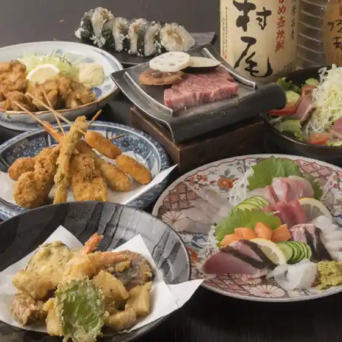
酒 魚 人情 有馬
Sake Sakana Ninjou Arima
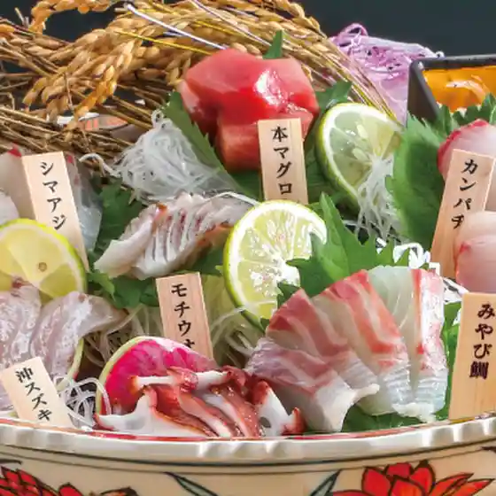
乾杯大牟田
Kanpai Oomuta
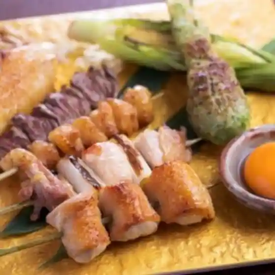
にの家 大牟田店
Nino Ie Oomuta Mise
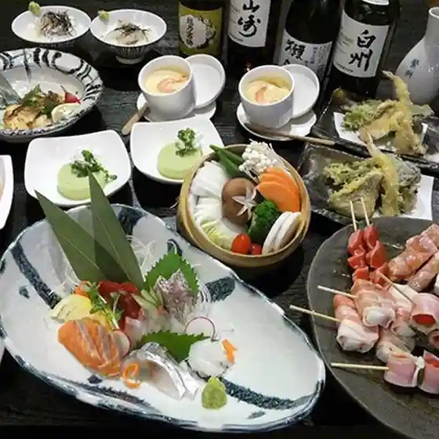
壱〇壱
Ichi (Maru) Ichi
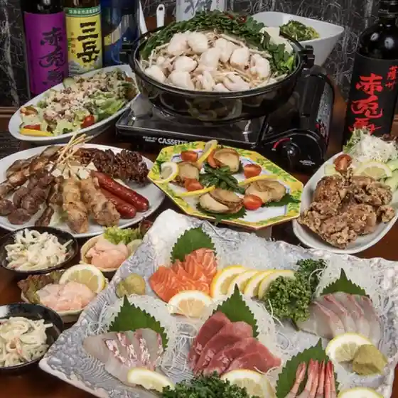
焼肉ダイニング ワンカルビ トライアル大牟田店
Yakiniku Dainingu Wankarubi Toraiaru Oomuta Mise
そば切り杜鶴
Soba Kiri Mori Tsuru
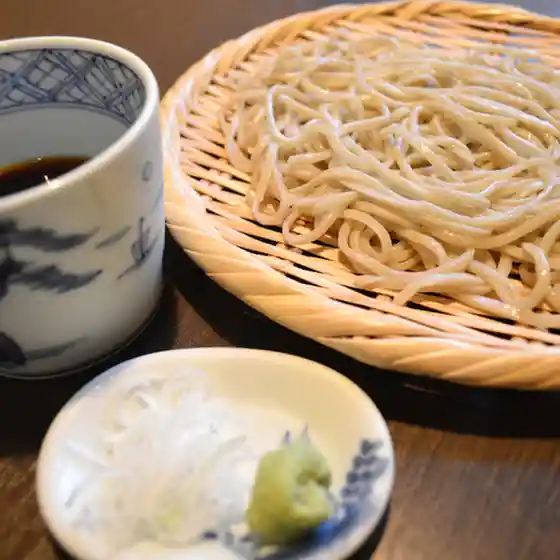
とり焼きの八兵衛
Tori Yaki No Hachibee
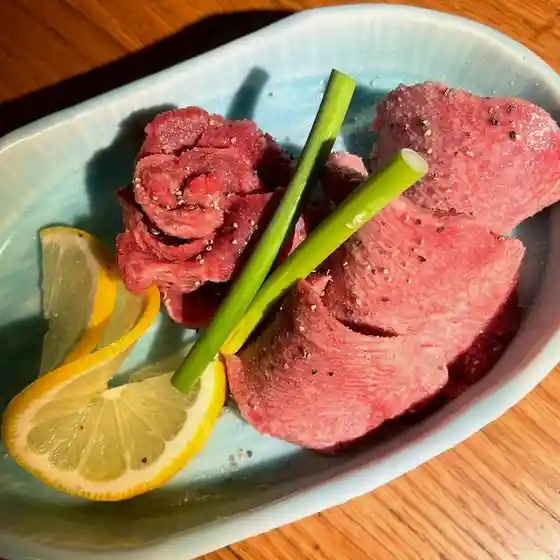
和み処 水とり 本店
Nagomi Tokoro Mizu Tori Honten
旬菜と網焼き酒場 本店 六星
Jun Na To Amiyaki Ki Sakaba Honten Roku Hoshi
チャイナスタンド 笑龍
Chainasutando Warai Ryuu
Vamos
Vamos
燒肉道楽 よいとまげ
Yakiniku Douraku Yoitomage
海鮮ダイニング 九州 美蔵 ホテルルートイン大牟田店
Kaisen Dainingu Kyuushuu Bi Kura Hoteruruutoin Oomuta Mise
地かろ
Chi Karo
カレーサカバ ニューク
Kareesakaba Nyuuku
水とり オームタガーデンホテル店
Mizu Tori Oomutagaadenhoteru Mise
新みなと 本館
Shin Minato Honkan
Latte
Latte
創作和食 味感
Sousaku Washoku Mikan
石室
Ishimuro
いざかや ハングリードールス
Izakaya Hanguriidoorusu
食楽漁師村
Shoku Raku Ryoushi Mura
揚屋
Ageya
銀嶺
Ginrei
あつあつ亭 駛馬店
Atsuatsu Tei Shi Maten
やきとり 元禄
Yakitori Genroku
hara harmony coffee
Hara Harmony Coffee
串かつ19
Kushi Katsu 19
カイダ
Kaida
SNACK BLUE BIRD
Snack Blue Bird
BAR Vance
Bar Vance
福岡餃子エンジェル
Fukuoka Gyouza Enjieru
新みち
Shin Michi
焼肉華蔵 ホテルルートイン大牟田店
Yakiniku Kezou Hoteruruutoin Oomuta Mise
キミーズコーヒー
Kimiizukoohii
やきとり五番
Yakitori Goban
ポップ シティ
Poppu Shitei
唐揚げ ごんちゃん
Karaage Gonchan
西野茶舗
Nishino Chaho
恵家
Megumi Ie
ザ ウイスキーバー
Za Uisukiibaa
ロコキッチン
Rokokitchin
プチ・レストラン やながわ
Puchi・Resutoran Yanagawa
かふぇマトロ
Kafe Matoro
麺屋天道
Men Ya Tendou
おべんとう タル助
Obentou Taru Jo
とり平
Tori Taira
てまり堂
Temari Dou
EVE
Eve
Bar GALAXY
Bar Galaxy
江口栄商店 本店
Eguchi Sakae Shouten Honten
CAFE INDIA こうこうとう
Cafe India Koukoutou
とり三
Tori San
芋花堂
Imo Hana Dou
くま本
Kuma Hon
いちゃりばちょーでー
Icharibachoodee
エイト
Eito
てーるらーめん
Teeruraamen
大木味市場
Taiboku Aji Shijou
Yamaguchi Unagi Ya Omuta Fukuoka Prefecture Kyushu
Yamaguchi Unagi Ya Omuta Fukuoka Prefecture Kyushu
Yamaguchi Unagi Ya Omuta Fukuoka Prefecture Kyushu
Yamaguchi Unagi Ya Omuta Fukuoka Prefecture Kyushu
Yamaguchi Unagi Ya Omuta Fukuoka Prefecture Kyushu
Yamaguchi Unagi Ya Omuta Fukuoka Prefecture Kyushu
Yamaguchi Unagi Ya Omuta Fukuoka Prefecture Kyushu
Yamaguchi Unagi Ya Omuta Fukuoka Prefecture Kyushu
Kousen Dago Asahimachi Omuta Fukuoka Prefecture Kyushu
Kousen Dago Asahimachi Omuta Fukuoka Prefecture Kyushu
Kousen Dago Asahimachi Omuta Fukuoka Prefecture Kyushu
Kousen Dago Asahimachi Omuta Fukuoka Prefecture Kyushu
Kousen Dago Asahimachi Omuta Fukuoka Prefecture Kyushu
Kousen Dago Asahimachi Omuta Fukuoka Prefecture Kyushu
Kousen Dago Asahimachi Omuta Fukuoka Prefecture Kyushu
Kousen Dago Asahimachi Omuta Fukuoka Prefecture Kyushu
Tashiro Omuta Fukuoka Prefecture Kyushu
Tashiro Omuta Fukuoka Prefecture Kyushu
Tashiro Omuta Fukuoka Prefecture Kyushu
Tashiro Omuta Fukuoka Prefecture Kyushu
Tashiro Omuta Fukuoka Prefecture Kyushu
Tashiro Omuta Fukuoka Prefecture Kyushu
Tashiro Omuta Fukuoka Prefecture Kyushu
Tashiro Omuta Fukuoka Prefecture Kyushu
Monsieur Sakai Omuta Omuta Fukuoka Prefecture Kyushu
Monsieur Sakai Omuta Omuta Fukuoka Prefecture Kyushu
Monsieur Sakai Omuta Omuta Fukuoka Prefecture Kyushu
Monsieur Sakai Omuta Omuta Fukuoka Prefecture Kyushu
Monsieur Sakai Omuta Omuta Fukuoka Prefecture Kyushu
Monsieur Sakai Omuta Omuta Fukuoka Prefecture Kyushu
Monsieur Sakai Omuta Omuta Fukuoka Prefecture Kyushu
Monsieur Sakai Omuta Omuta Fukuoka Prefecture Kyushu
Dairiki Jaya Omuta Fukuoka Prefecture Kyushu
Dairiki Jaya Omuta Fukuoka Prefecture Kyushu
Dairiki Jaya Omuta Fukuoka Prefecture Kyushu
Dairiki Jaya Omuta Fukuoka Prefecture Kyushu
Dairiki Jaya Omuta Fukuoka Prefecture Kyushu
Dairiki Jaya Omuta Fukuoka Prefecture Kyushu
Dairiki Jaya Omuta Fukuoka Prefecture Kyushu
Dairiki Jaya Omuta Fukuoka Prefecture Kyushu
Yakitoritakumi Omuta Fukuoka Prefecture Kyushu
Yakitoritakumi Omuta Fukuoka Prefecture Kyushu
Yakitoritakumi Omuta Fukuoka Prefecture Kyushu
Yakitoritakumi Omuta Fukuoka Prefecture Kyushu
Yakitoritakumi Omuta Fukuoka Prefecture Kyushu
Yakitoritakumi Omuta Fukuoka Prefecture Kyushu
Yakitoritakumi Omuta Fukuoka Prefecture Kyushu
Yakitoritakumi Omuta Fukuoka Prefecture Kyushu
Toyoken Omuta Fukuoka Prefecture Kyushu
Toyoken Omuta Fukuoka Prefecture Kyushu
Toyoken Omuta Fukuoka Prefecture Kyushu
Toyoken Omuta Fukuoka Prefecture Kyushu
Toyoken Omuta Fukuoka Prefecture Kyushu
Toyoken Omuta Fukuoka Prefecture Kyushu
Toyoken Omuta Fukuoka Prefecture Kyushu
Toyoken Omuta Fukuoka Prefecture Kyushu
Sobakiri Tokaku Omuta Fukuoka Prefecture Kyushu
Sobakiri Tokaku Omuta Fukuoka Prefecture Kyushu
Sobakiri Tokaku Omuta Fukuoka Prefecture Kyushu
Sobakiri Tokaku Omuta Fukuoka Prefecture Kyushu
Sanzokuya Omuta Omuta Fukuoka Prefecture Kyushu
Sanzokuya Omuta Omuta Fukuoka Prefecture Kyushu
Sanzokuya Omuta Omuta Fukuoka Prefecture Kyushu
Sanzokuya Omuta Omuta Fukuoka Prefecture Kyushu
Sushi Yoshi Omuta Fukuoka Prefecture Kyushu
Sushi Yoshi Omuta Fukuoka Prefecture Kyushu
Sushi Yoshi Omuta Fukuoka Prefecture Kyushu
Sushi Yoshi Omuta Fukuoka Prefecture Kyushu
Mitsui Minato Club Omuta Fukuoka Prefecture Kyushu
Mitsui Minato Club Omuta Fukuoka Prefecture Kyushu
Mitsui Minato Club Omuta Fukuoka Prefecture Kyushu
Mitsui Minato Club Omuta Fukuoka Prefecture Kyushu
Mitsui Minato Club Omuta Fukuoka Prefecture Kyushu
Mitsui Minato Club Omuta Fukuoka Prefecture Kyushu
Mitsui Minato Club Omuta Fukuoka Prefecture Kyushu
Mitsui Minato Club Omuta Fukuoka Prefecture Kyushu
Kokaen Omuta Fukuoka Prefecture Kyushu
Kokaen Omuta Fukuoka Prefecture Kyushu
Kokaen Omuta Fukuoka Prefecture Kyushu
Kokaen Omuta Fukuoka Prefecture Kyushu
Stay
ニューロイヤルホテル
Nyuuroiyaruhoteru
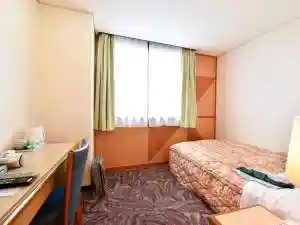
ビジネスインこめや２号館
Bijinesuin Komeya 2 Goukan
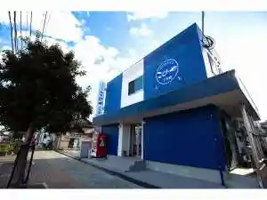
ビジネスインこめや
Bijinesuin Komeya
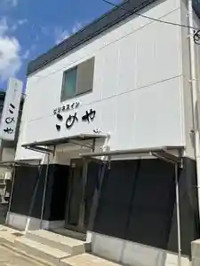
旅館 清風荘
Ryokan Seifuu Sou
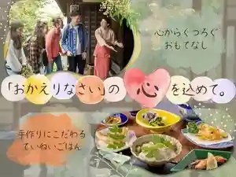
トレイルイン福岡大牟田（Ｔｒａｉｌｉｎｎ福岡大牟田）
Toreiruin Fukuokadai Muta ( T R A I L I N N Fukuokadai Muta )
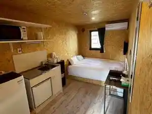
MONOMINA HOTEL stn.1
Monomina Hotel Stn . 1
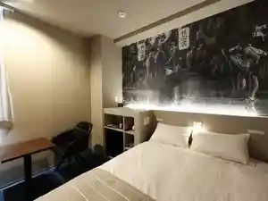
ホテルニューガイアオームタガーデン
Hoterunyuugaiaoomutagaaden
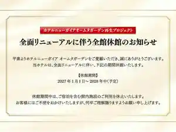
ホテルルートイン大牟田
Hoteruruutoin Oomuta
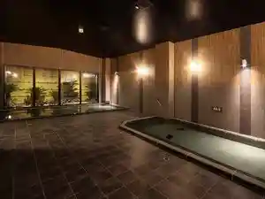
THE TRAILERHOUSE VILLAGE 大牟田 SPA
The Trailerhouse Village Oomuta Spa
【おおむたハイツ】有明海や雲仙、夕日を眺める絶景の宿
( Oomuta Haitsu ) Ariakekai Ya Unzen , Yuuhi Wo Nagame Ru Zekkei No Yado
ホテルＣ＆Ｓ新大牟田
Hoteru C & S Shindai Muta